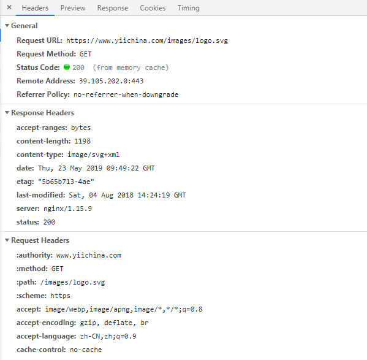

先来一张图:

####下面简单的来描述一下HTTP Cache机制：
当资源资源第一次被访问的时候，http status返回200，在头部携带当前资源的描述信息，eg:
最后修改的时间:```Last-Modified```
资源状态唯一标识:```Etag```
资源在客户端缓存的过期时间:```Expires```
同时浏览器会将资源缓存到cache目录，并保存文件描述信息。
当客户端第二次请求资源时，会先检查cache目录中是否含有该资源，如果有，并且还没到Expires设置的时间，
即文件还没有过期，那么此时客户端将直接从Cache目录中读取文件，而不再发送请求
如果资源已经过期，客户端会发送一次http请求到服务器，同时在header携带上次修改的时间：
```text
If-Modified-Since Thu, 26 Nov 2009 13:50:19 GMT
If-None-Match "8fb8b-14-4794674acdcc0"
```
####为什么会返回上一次的信息呢？
web服务器在接收到请求时，会先解析header里面的信息，然后校验头部信息。
如果该资源文件从上次时间到现在都没有修改或者Etag信息没有变化，，则web服务器将会直接返回304状态，
从而不会在资源文件，状态头部信息如下：
```text
(Status-Line) HTTP/1.1 304 Not Modified
Date Thu, 26 Nov 200914:09:07 GMT
Server Apache/2.2.11 (Unix)PHP/5.2.9
Connection Keep-Alive
Keep-Alive timeout=5, max=100
Etag "8fb8b-14-4794674acdcc0"
```
这样，就能够很大程度上减少网络带宽以及提升用户的浏览器体验。
当然，如果服务器经过匹配发现文件修改过了，就会将文件资源返回，并带上新文件状态信息。
####基本字段
```Expires:```
文件在本地缓存的过期时间，如果客户端发现缓存中的文件没有过期，则不发送请求
```Cache-Control:```
Cache-Control指定请求和响应遵循的缓存机制。
在请求消息或响应消息中设置Cache-Control并不会修改另一个消息处理过程中的缓存处理过程。
请求时的缓存指令包括
```text
no-cache
no-store
max-age
max-stale
min-fresh
only-if-cached
```
响应消息中的指令包括
```text
public
private
no-cache
no- store
no-transform
must-revalidate
proxy-revalidate
max-age
```
####指令含义：
```public:```
响应可被任何缓存区缓存。
```Private:```
对于单个用户的整个或部分响应消息，不能被共享缓存处理。
这允许服务器仅仅描述当用户的部分响应消息，此响应消息对于其他用户的请求无效。
```no-cache:```
请求或响应消息不能缓存。
```no-store:```
用于防止重要的信息被无意的发布。
在请求消息中发送将使得请求和响应消息都不使用缓存。
```max-age:```
客户端可以接收生存期不大于指定时间（以秒为单位）的响应。
```min-fresh:```
客户机可以接收响应时间小于当前时间加上指定时间的响应。
```max-stale:```
客户端可以接收超出超时期间的响应消息。
如果指定max-stale消息的值，那么客户端可以接收超出超时期指定值之内的响应消息。
####```Etag/If-None-Match```
一对验证文件实体的标记 "Entity Tag:的响应/请求头.
Apache中，ETag的值，默认是对文件的索引节（INode），大小（Size）和最后修改时间（MTime）进行Hash后得到的
```Last-Modified/If-Modified-Since:```
一对验证文件的修改时间的响应/请求头
Expires、 Cache-Control、Last-Modified、ETag是RFC2616（HTTP/1.1）协议中和网页缓存相关的几个字段。 前两个用来控制缓存的失效日期，浏览器可通过它来判定，需不需要发出HTTP请求； 后两个用来验证网页的有效性，服务器端利用它来验证这个文件是否需要重新返回Last-Modified VS Etag
既然有了Last-Modified，为什么还要用ETag字段呢？因为如果在一秒钟之内对一个文件进行两次更改，Last-Modified就会不正确。因此，HTTP/1.1利用Entity Tag头提供了更加严格的验证。